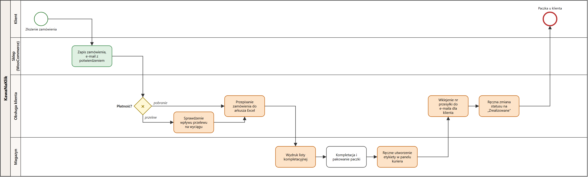
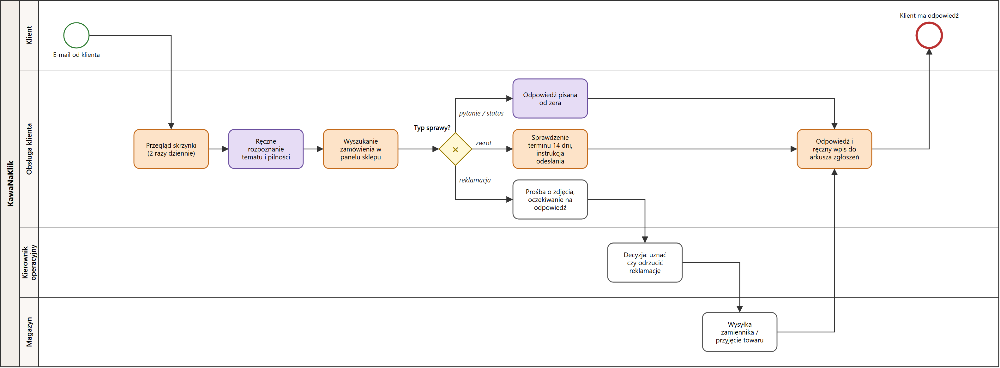
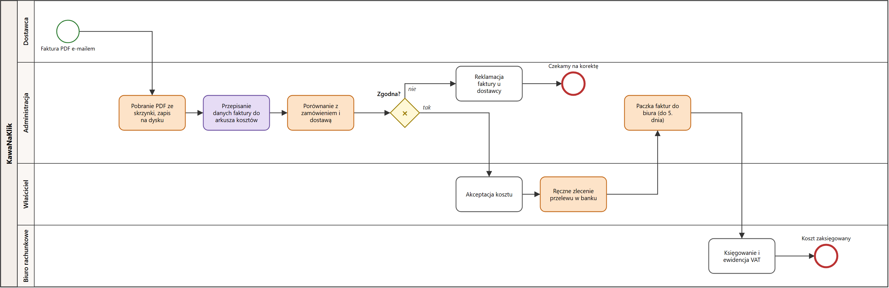
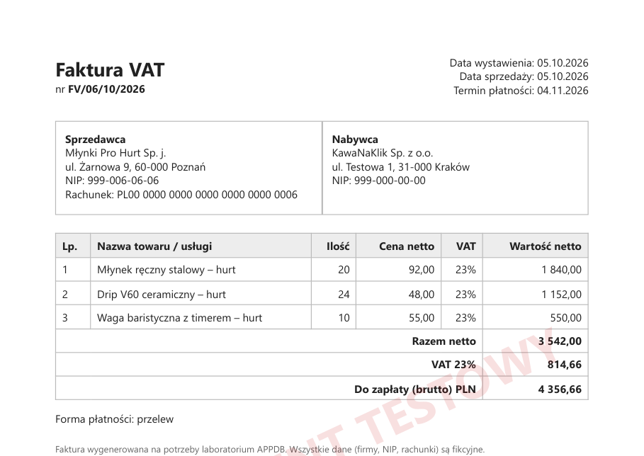

| Przedmiot | APPDB – Automatyzacja procesów biznesowych z AI |
|---|---|
| Zespół (2 os.) | 1. …………………………… 2. …………………………… |
| Scenariusz | Sklep internetowy – zamówienia, reklamacje, zwroty, pytania klientów |
| Data | 21.10.2026 |
| Zawartość | opis firmy · diagramy AS-IS (BPMN) · ocena kandydatów do automatyzacji · dane syntetyczne z promptami · wskaźniki bazowe |
Automatyzacja procesów to przekazanie maszynie powtarzalnych kroków, które dziś wykonuje człowiek. Wyróżniamy trzy podejścia. Różnią się tym, jak maszyna wykonuje pracę i jak dobrze radzi sobie z nieprzewidzianymi sytuacjami.
| Podejście | Jak działa | Przykład w KawaNaKlik | Ograniczenia |
|---|---|---|---|
| RPA (Robotic Process Automation) | „Robot programowy” klika i wpisuje dane w interfejsie aplikacji tak jak człowiek. Przydaje się, gdy system nie ma API. | Pobieranie wyciągu ze strony banku i zaznaczanie opłaconych zamówień. | Kruche – każda zmiana wyglądu strony psuje robota. |
| Workflow automation (n8n, Make, Zapier) | Przepływ zdarzeń między systemami przez API i webhooki: „gdy X, zrób Y”. Działa według stałych reguł. | Nowe zamówienie w WooCommerce → wiersz w arkuszu → etykieta u kuriera → e-mail z numerem przesyłki. | Radzi sobie tylko z danymi o przewidywalnej strukturze. |
| AI agents / LLM w przepływie | Model językowy rozumie tekst. Klasyfikuje, wyciąga dane, pisze szkice odpowiedzi, a agent sam dobiera narzędzia do celu. | Rozpoznanie, że e-mail to reklamacja o wysokim priorytecie. Odczyt pozycji z faktury PDF. | Może się mylić i zmyślać. Potrzebny nadzór i walidacja. |
KawaNaKlik Sp. z o.o. (firma fikcyjna) to sklep internetowy ze świeżo paloną kawą speciality i akcesoriami do parzenia. Działa od 2019 roku i ma siedzibę oraz magazyn w Krakowie. Sprzedaje wyłącznie online (WooCommerce) w całej Polsce, z wysyłką do paczkomatów i kurierem. Kawę kupuje od zewnętrznej palarni, a sam ją porcjuje i pakuje.
Inne dane o skali: ok. 30 produktów w 5 kategoriach, ok. 45 faktur kosztowych miesięcznie od 6 stałych dostawców. Udział płatności zwykłym przelewem wynosi 27% – te wpłaty trzeba ręcznie sprawdzać na wyciągu.
| Rola | Osób | Zakres obowiązków |
|---|---|---|
| Właściciel / prezes | 1 | Strategia, zakupy u palarni, akceptacja kosztów, przelewy. |
| Kierownik operacyjny | 1 | Nadzór nad realizacją zamówień, decyzje w reklamacjach, grafik magazynu. |
| Obsługa klienta | 2 | Skrzynka e-mail, weryfikacja płatności, przepisywanie zamówień do arkusza, numery przesyłek, zwroty. |
| Magazyn i pakowanie | 3 | Kompletacja, pakowanie, etykiety kurierskie, przyjęcie dostaw i zwrotów. |
| Administracja / finanse | 1 | Faktury kosztowe, arkusz kosztów, kontakt z biurem rachunkowym. |
| Marketing i e-commerce | 1 | Treści w sklepie, kampanie, newsletter. |
| Biuro rachunkowe (zewn.) | — | Księgowanie, VAT, deklaracje – dostaje paczkę faktur do 5. dnia miesiąca. |
Systemy dziś: sklep WordPress + WooCommerce (LAB01), skrzynka e-mail, arkusze Excel (zamówienia, zgłoszenia, koszty), panel WWW kuriera, bankowość internetowa. Systemy nie są ze sobą połączone, więc dane przenosi człowiek przez kopiuj-wklej.
Zamapowaliśmy trzy procesy, które pochłaniają najwięcej czasu zespołu. Diagramy są w notacji BPMN 2.0 (pula KawaNaKlik, tory ról, zdarzenia, zadania, bramki XOR). Pliki źródłowe .drawio można otworzyć i edytować w draw.io (bpmn/).
ręczne, powtarzalne – kandydat do workflow/RPA wymaga rozumienia tekstu – kandydat do AI już automatyczne decyzja / praca człowieka

Sklep sam zapisuje zamówienie i wysyła potwierdzenie, ale od tego miejsca prawie wszystko robi człowiek:
Wąskie gardła: wielokrotne przepisywanie tych samych danych – adres przepisuje się dwa razy. To z tych kroków bierze się większość błędów (rozdz. 6).

Obsługa przegląda skrzynkę dwa razy dziennie, czyta każdą wiadomość, sama rozpoznaje temat i pilność, a potem szuka zamówienia w panelu sklepu. Dalej proces rozgałęzia się:
Każda sprawa kończy się ręcznym wpisem do arkusza zgłoszeń.
Wąskie gardła: pilne sprawy (uszkodzona paczka, groźba zgłoszenia do rzecznika) czekają w kolejce razem ze spamem, a klient czeka średnio kilka godzin na pierwszą odpowiedź.

Faktury PDF przychodzą e-mailem w różnych układach. Administracja wykonuje kolejno:
Faktura niezgodna (np. inna ilość niż w zamówieniu) wraca do dostawcy z reklamacją. Zgodną akceptuje właściciel i ręcznie zleca przelew. Raz w miesiącu administracja wysyła paczkę faktur do biura rachunkowego.
Wąskie gardła: faktury czekają na akceptację właściciela, przez co część płatności jest po terminie. Do tego dochodzą pomyłki przy przepisywaniu kwot.
Każde zadanie z diagramów AS-IS oceniliśmy w skali 1–5 według czterech kryteriów z założeń laboratorium:
Wynik = P + C + R + (6 − H). Maksimum to 20 pkt. Kryterium H odwracamy, bo im bardziej zadanie wymaga człowieka, tym gorzej nadaje się do automatyzacji. Progi orientacyjne:
| Proces | Zadanie | P | C | R | H | Wynik | Typ | Rekomendacja |
|---|---|---|---|---|---|---|---|---|
| Zamówienie | Przepisanie zamówienia do arkusza | 5 | 4 | 4 | 1 | 18 | workflow | Automatyzować – webhook WooCommerce → arkusz |
| Zamówienie | Utworzenie etykiety kurierskiej | 5 | 4 | 4 | 1 | 18 | workflow/API | Automatyzować – API przewoźnika |
| Zamówienie | Sprawdzenie wpływu przelewu | 5 | 3 | 4 | 1 | 17 | workflow | Automatyzować – dopasowanie wyciągu / bramka płatności |
| Faktury | Przepisanie danych faktury | 5 | 4 | 4 | 2 | 17 | AI | AI odczytuje PDF, walidacja sum regułami |
| Zamówienie | Nr przesyłki w e-mailu do klienta | 5 | 3 | 3 | 1 | 16 | workflow | Automatyzować |
| Faktury | Porównanie z zamówieniem | 5 | 4 | 4 | 3 | 16 | workflow + AI | Automatyzować, wyjątki do człowieka |
| E-maile | Przegląd skrzynki | 5 | 2 | 3 | 1 | 15 | workflow | Automatyzować – wyzwalacz IMAP |
| E-maile | Wyszukanie zamówienia | 5 | 3 | 2 | 1 | 15 | workflow | Automatyzować – nr zamówienia / e-mail → API |
| E-maile | Wpis do arkusza zgłoszeń | 5 | 2 | 3 | 1 | 15 | workflow | Automatyzować |
| Faktury | Paczka faktur do biura | 5 | 2 | 3 | 1 | 15 | workflow | Automatyzować – folder współdzielony |
| Zamówienie | Wydruk listy kompletacyjnej | 5 | 2 | 2 | 1 | 14 | workflow | Automatyzować w pakiecie (PDF generowany sam) |
| Zamówienie | Kompletacja i pakowanie | 5 | 5 | 3 | 5 | 14 | — | Zostaje człowiek – praca fizyczna (wsparcie: skaner EAN) |
| E-maile | Rozpoznanie tematu i pilności | 5 | 3 | 3 | 3 | 14 | AI | AI klasyfikuje, człowiek przy niskiej pewności |
| E-maile | Odpowiedź na pytanie / status | 4 | 4 | 3 | 3 | 14 | AI | AI szkicuje, człowiek zatwierdza |
| E-maile | Sprawdzenie terminu zwrotu | 4 | 2 | 4 | 2 | 14 | workflow | Automatyzować – reguła 14 dni |
| Zamówienie | Zmiana statusu zamówienia | 5 | 1 | 2 | 1 | 13 | workflow | Automatyzować w pakiecie z etykietą |
| Faktury | Pobranie PDF ze skrzynki | 5 | 1 | 2 | 1 | 13 | workflow | Automatyzować w pakiecie |
| Faktury | Zlecenie przelewu | 4 | 2 | 4 | 4 | 12 | częściowo | Paczka przelewów, zatwierdza właściciel |
| E-maile | Decyzja o reklamacji | 3 | 3 | 4 | 5 | 11 | — | Zostaje człowiek (AI: streszczenie sprawy) |
| Faktury | Akceptacja kosztu | 4 | 1 | 2 | 5 | 8 | — | Zostaje człowiek – 1 klik w powiadomieniu |
Zgodnie z zasadą danych używamy wyłącznie danych wygenerowanych przez zespół z pomocą modelu językowego (LLM). Przyjęliśmy dwa sposoby generowania:
kod/dane_gen.py). Generator ma stałe ziarno losowania, więc za każdym razem tworzy identyczne dane, a skala jest dowolna – tysiące wierszy bez ręcznego wklejania.kod/emaile_llm.py). Liczy się tu naturalny, zróżnicowany język, którego generator losowy nie da. Generator wstawia do nich tylko numery zamówień i dane nadawców, żeby e-maile pasowały do zamówień w arkuszu.dane/KawaNaKlik_dane_syntetyczne.xlsx| Arkusz | Wierszy | Kolumny / zakres |
|---|---|---|
klienci | 1 200 | id, imię, nazwisko, e-mail (.test), telefon, miasto, adres, typ (osoba/firma), zgoda marketingowa, data rejestracji |
produkty | 30 | SKU, nazwa, kategoria, cena brutto, stan magazynowy, waga |
zamowienia | 1 449 | nr, data i godzina, klient, status, płatność, wysyłka, wartości, błąd ręczny – 14 dni (1–14.10.2026) |
pozycje_zamowien | 2 614 | nr zamówienia, SKU, produkt, ilość, cena, wartość |
emaile | 50 | id, data, nadawca, klient, nr zamówienia, temat, treść, kategoria i priorytet wzorcowy, ton |
faktury | 6 | nr, dostawca, NIP (fikcyjny), daty, netto/VAT/brutto, plik PDF, uwagi |
Te same tabele są w plikach CSV (separator „;”, UTF-8) – do importu do Google Sheets i n8n w kolejnych etapach. Najważniejsze liczby:
Klienci
| klient_id | imie | nazwisko | miasto | typ | zgoda_marketing | |
|---|---|---|---|---|---|---|
| K0001 | Agnieszka | Dąbrowska | agnieszka.dabrowska1@kawanaklik.test | Białystok | osoba prywatna | False |
| K0002 | Filip | Dąbrowski | filip.dabrowski2@kawanaklik.test | Warszawa | osoba prywatna | True |
| K0003 | Jakub | Pawlak | jakub.pawlak3@kawanaklik.test | Kraków | osoba prywatna | False |
| K0004 | Łukasz | Krawczyk | lukasz.krawczyk4@kawanaklik.test | Poznań | osoba prywatna | True |
Produkty
| sku | nazwa | kategoria | cena_brutto | stan_magazynowy |
|---|---|---|---|---|
| KNK-ETI-250 | Etiopia Yirgacheffe 250 g | Kawa ziarnista | 49.9 | 140 |
| KNK-ETI-1000 | Etiopia Yirgacheffe 1 kg | Kawa ziarnista | 169.0 | 35 |
| KNK-KOL-250 | Kolumbia Supremo 250 g | Kawa ziarnista | 42.9 | 160 |
| KNK-KOL-1000 | Kolumbia Supremo 1 kg | Kawa ziarnista | 129.0 | 60 |
| KNK-BRA-500 | Brazylia Santos 500 g | Kawa ziarnista | 64.5 | 90 |
| KNK-BRA-1000 | Brazylia Santos 1 kg | Kawa ziarnista | 115.0 | 40 |
Zamówienia – kolumna blad_reczny oznacza zamówienia, w których przy ręcznej obsłudze wystąpił błąd. Ta kolumna jest źródłem wskaźnika błędów w rozdz. 6.
| nr_zamowienia | data | klient_id | status | platnosc | wysylka | razem | blad_reczny |
|---|---|---|---|---|---|---|---|
| KNK-10001 | 2026-10-01 22:43 | K0062 | zrealizowane | karta | Kurier | 113.99 | literówka w adresie przy przepisywaniu |
| KNK-10002 | 2026-10-01 11:40 | K0384 | zrealizowane | karta | Paczkomat | 336.9 | |
| KNK-10003 | 2026-10-01 20:08 | K0844 | zrealizowane | pobranie | Kurier | 106.89 | |
| KNK-10004 | 2026-10-01 13:23 | K0913 | zrealizowane | przelew tradycyjny | Kurier | 100.79 | |
| KNK-10005 | 2026-10-01 19:44 | K0887 | wstrzymane | BLIK | Paczkomat | 109.79 | |
| KNK-10006 | 2026-10-01 06:37 | K0495 | zrealizowane | pobranie | Kurier | 206.7 |
Każdy e-mail ma etykietę wzorcową: kategoria_wzorcowa i priorytet_wzorcowy. W etapie z AI posłużą jako „klucz odpowiedzi” do zmierzenia trafności klasyfikatora LLM. W zbiorze jest 18 różnych tonów wypowiedzi: angielski, chaotyczny, emocjonalny, entuzjastyczny, formalny, marketingowy, pośpieszny, przyjazny, rozczarowany, rzeczowy, sarkastyczny, spokojny, uprzejmy, z literówkami, zdenerwowany, zdezorientowany, zniecierpliwiony, zwięzły.
| Kategoria | Liczba |
|---|---|
| reklamacja | 10 |
| status_przesylki | 8 |
| pytanie_produkt | 8 |
| zwrot | 7 |
| faktura | 5 |
| zmiana_zamowienia | 4 |
| platnosc | 3 |
| pochwala | 2 |
| spam | 1 |
| wiele_spraw | 1 |
| oferta_b2b | 1 |
Celowo dodaliśmy przypadki trudne dla klasyfikatora:
| email_id | temat | tresc | kategoria_wzorcowa | priorytet_wzorcowy | ton |
|---|---|---|---|---|---|
| M024 | paczka | dzien dobry kiedy dojdzie moja paczka zamawialam w srode nr KNK-10175 prosze o info bo nie wiem czy czekac w domu Marta Lis | status_przesylki | średni | z literówkami |
| M049 | Zwiększ sprzedaż o 300% – pozycjonowanie SEO!!! | Szanowny Właścicielu, Twoja strona nie jest w TOP 10 Google! Nasza agencja gwarantuje 300% wzrostu sprzedaży w 30 dni. Odpowiedz na tego maila, a przy… | spam | niski | marketingowy |
| M010 | Druga reklamacja w miesiącu | To już drugi raz w tym miesiącu! Znowu rozbita paczka (KNK-10265). Poprzednio odpuściłem, ale teraz chcę zwrotu pieniędzy, nie wymiany. Jeśli nie dost… | reklamacja | wysoki | zdenerwowany |
| M023 | Zamówienie KNK-10289 – brak informacji | Dzień dobry, opłaciłem zamówienie przelewem w poniedziałek, a status cały czas „oczekujące na płatność”. Czy przelew doszedł? W załączniku potwierdzen… | status_przesylki | średni | uprzejmy |
| M002 | Reklamacja – młynek nie mieli | Dzień dobry, w zamówieniu KNK-10075 kupiłem młynek ręczny stalowy. Po tygodniu korba zaczęła przeskakiwać i młynek przestał mielić. Czy mogę prosić o… | reklamacja | wysoki | uprzejmy |
| M019 | GDZIE JEST MOJA PACZKA | Śledzenie od trzech dni pokazuje „w drodze”. Zamówienie KNK-10009. Kawa miała być na weekend. Może ktoś mi wreszcie odpowie?! | status_przesylki | wysoki | zdenerwowany |
| M037 | Prośba o fakturę zbiorczą | Szanowni Państwo, regularnie zamawiamy kawę do biura. Czy istnieje możliwość otrzymywania jednej faktury zbiorczej na koniec miesiąca zamiast osobnych… | faktura | średni | formalny |
Generator tworzy sześć faktur od fikcyjnych dostawców: palarni, producenta opakowań, firmy kurierskiej, hostingu, drukarni i hurtowni akcesoriów. Faktury mają różne pozycje i terminy płatności. Na każdej jest znak wodny „DOKUMENT TESTOWY”, a NIP-y (999-…) i rachunki (PL00…) są fikcyjne. Faktura nr 6 ma celową niezgodność z zamówieniem (24 zamiast 20 szt. drippera), żeby przetestować ścieżkę „niezgodna” z procesu AS-IS 3.
| nr_faktury | dostawca | data_wystawienia | termin_platnosci | brutto | uwagi |
|---|---|---|---|---|---|
| FV/01/10/2026 | Palarnia Ziarno i Ogień Sp. z o.o. | 2026-10-12 | 2026-10-26 | 10282.8 | |
| FV/02/10/2026 | EkoPak Opakowania S.A. | 2026-10-01 | 2026-10-22 | 4218.9 | |
| FV/03/10/2026 | KurierExpress Polska Sp. z o.o. | 2026-10-11 | 2026-10-25 | 9659.44 | |
| FV/04/10/2026 | HostNet Sp. z o.o. | 2026-10-05 | 2026-10-12 | 1817.94 | |
| FV/05/10/2026 | DrukArt Studio Graficzne | 2026-10-11 | 2026-10-25 | 1020.9 | |
| FV/06/10/2026 | Młynki Pro Hurt Sp. j. | 2026-10-05 | 2026-11-04 | 4356.66 | Na zamówieniu było 20 szt. drippera V60, na fakturze 24 szt. – faktura do wyjaśnienia. |

dane/faktury/faktura_06_mlynki.pdf).Prompt 1 – generator danych tabelarycznych
Jesteś analitykiem danych. Napisz skrypt w Pythonie (openpyxl), który wygeneruje syntetyczne dane polskiego sklepu internetowego z kawą speciality „KawaNaKlik” i zapisze je do jednego pliku .xlsx (osobne arkusze) oraz do CSV: - klienci: 1200 osób, polskie imiona i nazwiska z poprawną odmianą żeńską, miasta z wagami zbliżonymi do liczby ludności, ok. 8% firm, e-maile wyłącznie w domenie .test, adresy „ul. Testowa N”; - produkty: ok. 30 pozycji (kawa ziarnista, mielona, akcesoria, zestawy, subskrypcja) z realistycznymi cenami w PLN i stanami magazynowymi; - zamówienia: 14 dni (1–14.10.2026), średnio ok. 100 dziennie, więcej w poniedziałki, mniej w weekendy, godziny z maksimum wieczorem; statusy, płatności (BLIK, karta, przelew, pobranie), wysyłka (Paczkomat, kurier), darmowa dostawa od 199 zł; ok. 2,5% zamówień oznacz kolumną „blad_reczny” z typem błędu przy ręcznej obsłudze; - pozycje zamówień powiązane z zamówieniami; - 6 faktur kosztowych od fikcyjnych dostawców jako HTML do wydruku do PDF, ze znakiem wodnym „DOKUMENT TESTOWY”, NIP-ami zaczynającymi się od 999 i rachunkami PL00…; jedna faktura ma mieć ilość niezgodną z zamówieniem. Użyj stałego ziarna losowania. Żadnych prawdziwych danych osobowych.
Prompt 2 – e-maile od klientów
Napisz 50 realistycznych e-maili od klientów sklepu internetowego z kawą
speciality, po polsku (1–2 po angielsku). Rozkład tematów: reklamacje (10),
zwroty (7), status przesyłki (8), pytania o produkt (8), faktury (5), zmiana
lub anulowanie zamówienia (4), płatności (3), pochwały (2), zapytanie B2B (1),
spam (1), jeden e-mail z kilkoma sprawami naraz.
Zróżnicuj ton: uprzejmy, zdenerwowany, sarkastyczny, zdezorientowany, formalny,
zwięzły, emocjonalny, z literówkami i bez polskich znaków itd.
Każdy e-mail: temat, treść 1–5 zdań, w miejscu numeru zamówienia znacznik {zam},
w podpisie {imie}. Do każdego dodaj kategorię wzorcową, priorytet
(niski/średni/wysoki) i ton. Zwróć jako listę słowników Pythona.
Nie używaj prawdziwych nazwisk, firm, adresów ani numerów.
Prompt 3 – kontrola jakości
Sprawdź wygenerowane dane: czy rozkład zamówień na klienta jest realistyczny (nikt nie składa kilkudziesięciu zamówień w 2 tygodnie), czy sumy zamówień zgadzają się z pozycjami, czy daty e-maili są późniejsze niż daty zamówień, których dotyczą, i czy nigdzie nie występują prawdziwe dane osobowe.
Poprawki po kontroli:
.test,Koszt pracodawcy liczymy jako pensja brutto × 1,2048 (składki ZUS, FP, FGŚP, PPK – przybliżenie) / 168 h. Czas właściciela wyceniamy na 80 zł/h.
| Rola | Pensja brutto | Koszt roboczogodziny |
|---|---|---|
| Obsługa klienta | 6 500 zł | 47 zł/h |
| Magazyn | 5 400 zł | 39 zł/h |
| Administracja | 6 000 zł | 43 zł/h |
| Kierownik operacyjny | 7 500 zł | 54 zł/h |
| Właściciel | — | 80 zł/h |
Czasy kroków to szacunki z obserwacji procesu, zgodne z diagramami z rozdz. 3. Wolumeny wynikają z danych syntetycznych: 104 zamówień/dzień × 30 dni, 55 e-maili/dzień, 45 faktur/mies.
Zamówienie (ręczne kroki administracyjne, bez pakowania)
| Krok | Rola | min | koszt |
|---|---|---|---|
| Sprawdzenie wpływu przelewu (tylko przelewy) | Obsługa klienta | 0,40 | 0,32 zł |
| Przepisanie zamówienia do arkusza | Obsługa klienta | 2,50 | 1,96 zł |
| Wydruk listy kompletacyjnej | Magazyn | 0,30 | 0,20 zł |
| Ręczne utworzenie etykiety kurierskiej | Magazyn | 2,00 | 1,30 zł |
| Wklejenie nr przesyłki do e-maila | Obsługa klienta | 1,20 | 0,94 zł |
| Ręczna zmiana statusu | Obsługa klienta | 0,40 | 0,31 zł |
| Razem na zamówienie | 6,8 | 5,02 zł | |
Zgłoszenie e-mail
| Krok | Rola | min | koszt |
|---|---|---|---|
| Przegląd skrzynki | Obsługa klienta | 0,50 | 0,39 zł |
| Rozpoznanie tematu i pilności | Obsługa klienta | 1,00 | 0,78 zł |
| Wyszukanie zamówienia | Obsługa klienta | 2,00 | 1,57 zł |
| Napisanie odpowiedzi (średnio) | Obsługa klienta | 5,00 | 3,92 zł |
| Wpis do arkusza zgłoszeń | Obsługa klienta | 1,00 | 0,78 zł |
| Decyzja kierownika (tylko reklamacje) | Kierownik operacyjny | 1,00 | 0,90 zł |
| Razem na zgłoszenie | 10,5 | 8,34 zł | |
Faktura kosztowa
| Krok | Rola | min | koszt |
|---|---|---|---|
| Pobranie PDF i zapis na dysku | Administracja | 1,00 | 0,72 zł |
| Przepisanie danych do arkusza | Administracja | 4,00 | 2,87 zł |
| Porównanie z zamówieniem i dostawą | Administracja | 4,00 | 2,87 zł |
| Akceptacja kosztu | Właściciel | 1,00 | 1,33 zł |
| Zlecenie przelewu | Właściciel | 2,00 | 2,67 zł |
| Paczka faktur do biura (rozłożona) | Administracja | 1,00 | 0,72 zł |
| Razem na fakturę | 13,0 | 11,17 zł | |
W danych syntetycznych 40 z 1 449 zamówień, czyli 2,76%, ma błąd przy ręcznej obsłudze. Przy obecnym wolumenie to ok. 86 błędów miesięcznie.
Szacowany koszt jednego błędu to 38 zł: ponowna wysyłka, rabat lub towar i ok. 20 min pracy.
Dodatkowe wskaźniki (szacunek):
| Typ błędu (dane syntetyczne) | Liczba |
|---|---|
| pominięty produkt przy kompletacji | 13 |
| zły produkt (mielona zamiast ziarnistej) | 8 |
| nie wysłano numeru przesyłki | 7 |
| literówka w adresie przy przepisywaniu | 5 |
| przelew nieprzypisany > 2 dni | 4 |
| etykieta nadana na zły adres | 3 |
| Wskaźnik | Wartość AS-IS | Źródło |
|---|---|---|
| Czas ręcznej obsługi zamówienia | 6,8 min | szacunek kroków, tab. 6.2 |
| Czas obsługi zgłoszenia e-mail | 10,5 min | szacunek kroków, tab. 6.2 |
| Czas obsługi faktury kosztowej | 13,0 min | szacunek kroków, tab. 6.2 |
| Czas do pierwszej odpowiedzi na e-mail | ok. 6,5 h (w weekend do 60 h) | skrzynka przeglądana 2× dziennie |
| Odsetek zamówień z błędem | 2,76% | dane syntetyczne |
| Ręczna praca w 3 procesach / mies. | 651 h (≈ 3,9 etatu) | wolumen × czas |
| Zamówienia: 3 105/mies. | 352 h · 15 594 zł | |
| E-maile: 1 650/mies. | 289 h · 13 764 zł | |
| Faktury: 45/mies. | 9,8 h · 502 zł | |
| Koszt błędów / mies. | 3 257 zł | 86 × 38 zł |
| Łączny koszt ręcznej obsługi / mies. | 33 117 zł | rocznie ok. 397 404 zł |
Te wartości są punktem odniesienia. Po wdrożeniu automatyzacji (etapy II–V) zmierzymy te same wskaźniki i policzymy zwrot z inwestycji (ROI).
| Załącznik | Plik |
|---|---|
| Diagramy BPMN AS-IS (edytowalne + PNG) | bpmn/*.drawio, bpmn/*.png |
| Arkusz danych syntetycznych | dane/KawaNaKlik_dane_syntetyczne.xlsx + dane/*.csv |
| Faktury PDF | dane/faktury/*.pdf |
| Generator danych, e-maile, generator diagramów, skrypt sprawozdania | kod/dane_gen.py, kod/emaile_llm.py, kod/bpmn_gen.py, kod/build_raport.py |